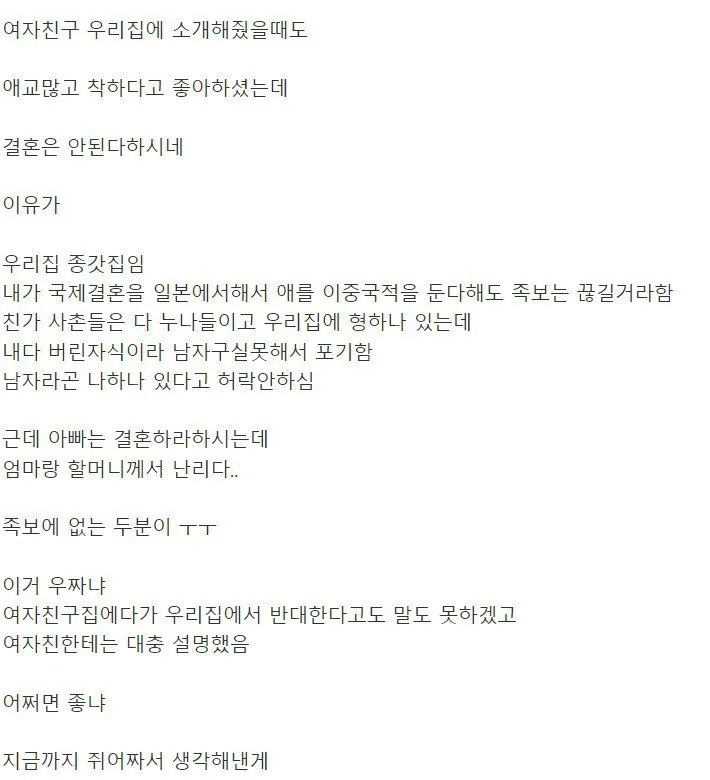
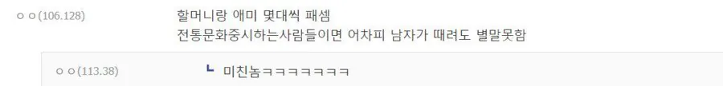

내선일체 모르세요? 내선일체?
암탉이 울면 집안이 망한다고 해야 되나
외국에 온 가문이 한둘도 아닌데 며느리가 외국인이라고 대가 끊긴다는건 먼 개소리임 ㅋㅋㅋ
어디 집안에서 종손 하는 일에 여자가 말 얹냐고 꾸짖으면 됨 ㅋㅋㅋ
ㅋㅋㅋㅋㅋㅋㅋㅋㅋㅋㅋ필승전략ㅋㅋㅋㅋ
갈!!
와 이게 답이다
"근데.. 종손이 결정한 것에 왜 여인들이 말씀을 얹으시는지 도통..ㅎㅎ.."
가부장적으로 전통중시하게 뒤주에좀 가둬
그건 왕도이니 한낱 일개 가정에 적용하기엔 과하오
어딜 여자가
댓글이 죤나웃기네
일제에 피해입은 집안이면 이해하는데
이건 좀
ㅋㅋㅋ 댓글
어차피 일본과 이중국적 안 되지 않아?
남자는 불가능하지 ㅋㅋ
군대갔다와두 안되나
군대가면 됨
원칙적으론 안됨 일본이 이중국적을 인정하지 않음
근데 다른나라 국적이 있다고 정부쪽에서 딱히 지랄은 안해서 알음알음 들고 있는 사람도 많다고..
사실 이 사람이 다른나라 국적을 갖고 있는지 나라에서 알 방법도 없고 권리도 없어서 출입국할때 여권간수만 잘하면 된다고는 하더라 다만 몇몇 국가는 후천적 취득시 대사관에 통보한다고 함
어디 여자가 대장부일에 반대하나 하고 패면될듯
어데 장손도 허락한 결혼을 여편네들이 목소리를 .. 확 그냥
족보가 왜 끊겨 뭔 개소리 하고있어...
국제결혼이랑 족보랑 대체 무슨상관인데
그럼 김해김씨 문중은 근본도 없는 사생아 집안이란 소리냐
어서 저자를 잡아다가 매우 쳐라
ㅋㅋㅋㅋㅋㅋㅋㅋ
종갓집 종손의 일에 어찌 여편네들이 목소리를 높히지?
개족보가 되니깐 그러는건 알겠는데
그게 뭔 상관임
종가 시애미질 못하니까 저러는건가
겸상해주니 배가불렀나봐 어디 아들일에 왱알왱알
근데 족보에 배우자 들어가는데...
그거는 집안마다 다름. 우리는 밑에 언급만 되고 오르지는 않음
타요
원래 세자보다 대비 파워가 훨씬 센게맞긴해 ㅋㅋㅋ
여자 목소리가 크면 가세가 기운다고 해라